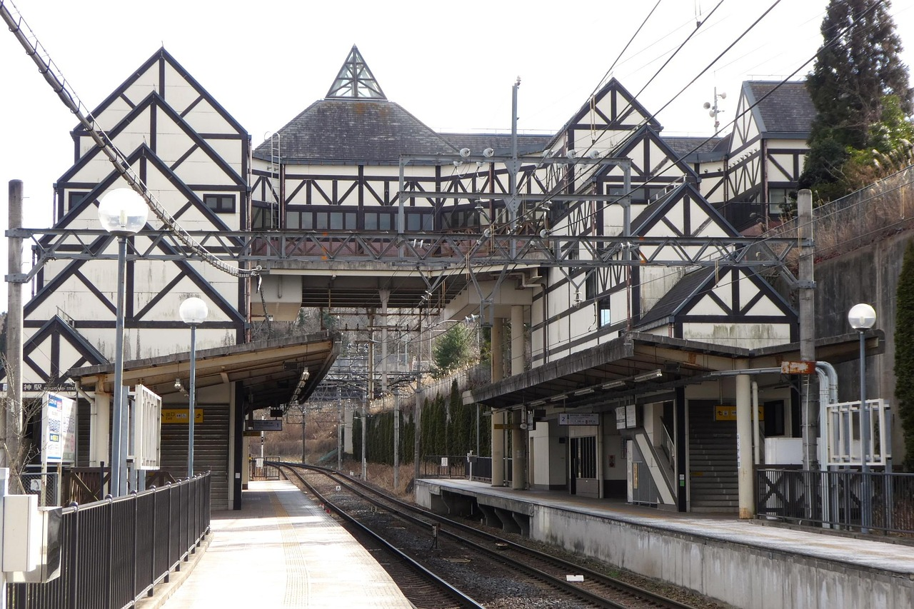

姶良駅前で30人に聞いた、住みたい街。
10代から60代まで、駅前で立ち止まってくれた人の答え。生活のリアルを、なるべくそのまま並べる。
鹿児島に住む人の声を集め、そのまま記事にしていくメディアです。編集者の一人称ではなく、現場で聞いた言葉を軸にします。
あなたの声を届ける →
10代から60代まで、駅前で立ち止まってくれた人の答え。生活のリアルを、なるべくそのまま並べる。
届いた声は、許可をいただいた範囲で記事の素材にします。名前が出ない形でも構いません。